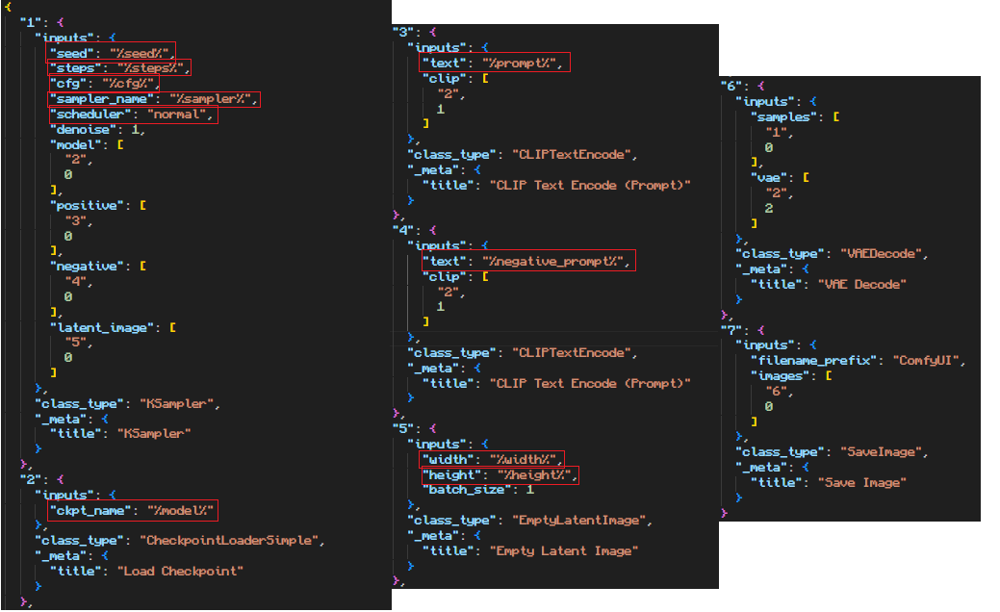

How to Setup the Comfyui API
This guide explains how to configure the Comfyui API using SP-MangaEditer.
API Setup Steps
Edit the run_nvidia_gpu.bat file within the Comfyui folder to set environment variables.
The configuration file is as follows

Environment Variable to Set
Simple Setup:
--enable-cors-header
Comfyui workflow usage guide
Preset workflow
If you don't have a workflow of your own that you wanna use then there exists a preset default workflow that will automatically be used if you don't load another one. This workflow does not contain any hires-fix, adetailer or upscaling.
Custom workflow
If you wanna use a custom workflow you first need to make sure to export it from Comfyui in API format, this can be done by opening up the settings menu in Comfyui and then enabling the 'Enable Dev mode options' option.

Once that option is enabled you will now find in your Comfyui menu the ability to save a workflow in API format. Now you can go to SP-MangaEditer and in the 'SD API' menu found in the top navigation bar you will find a button to upload your workflow file as long as Comfyui is selected as your API of choice.
Custom workflow placeholders
If you want the ability to change parameters on your image generations in SP-MangaEditer without chaning your workflow constantly, you need to add so called placeholders to your workflow json file. Once a placeholder for a parameter has been added, Comfyui will use the parameters selected in SP-MangaEditer over the ones that was initially in your workflow. The current supported placeholders are the following:
- "%prompt%"
- "%negative_prompt%"
- "%cfg%"
- "%steps%"
- "%sampler%"
- "%scheduler%"
- "%model%"
- "%seed%"
- "%vae%"
- "%width%"
- "%height%"
To add your placeholders you will have to open your workflow .json file in the text editor of your choice. Then you have to identify where each placeholder is supposed to be located and replace the initial value with the correct placeholder. To get a good idea of how this is done you can take a look at the preset workflow file, './sample_t2i.json'.

Warning: Comfyui support is work in progress
Support for Comfyui API is currently only a work in progress effort and perfect functionality should not be expected. Certain features are missing, bugs are to be expected and the user experience can be poor. If you encounter any issues, have any suggestions/ideas or just have any complaint about the user experience then please write an issue on GitHub or on Discord.